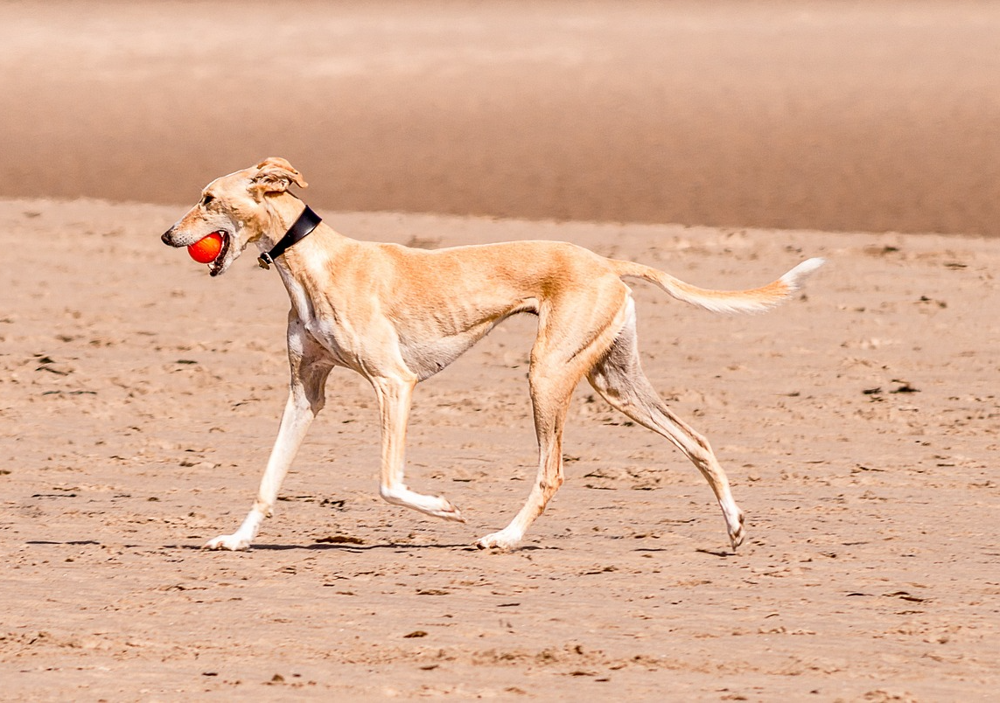
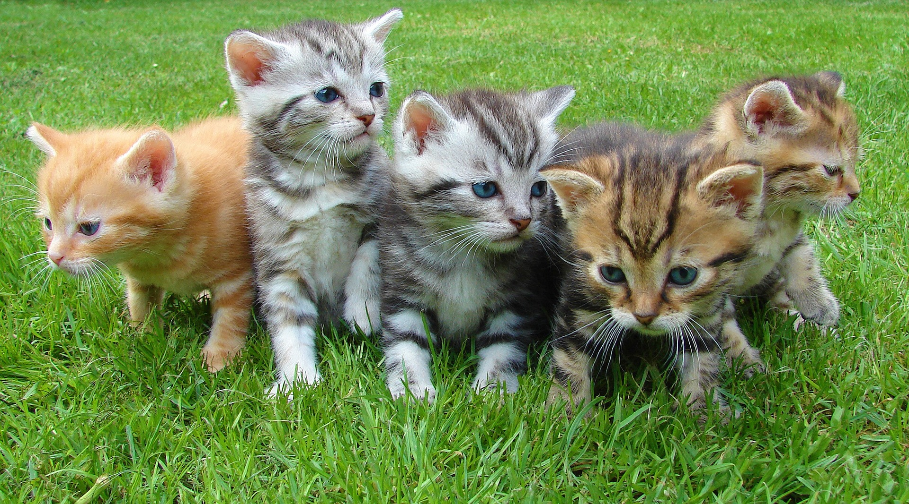
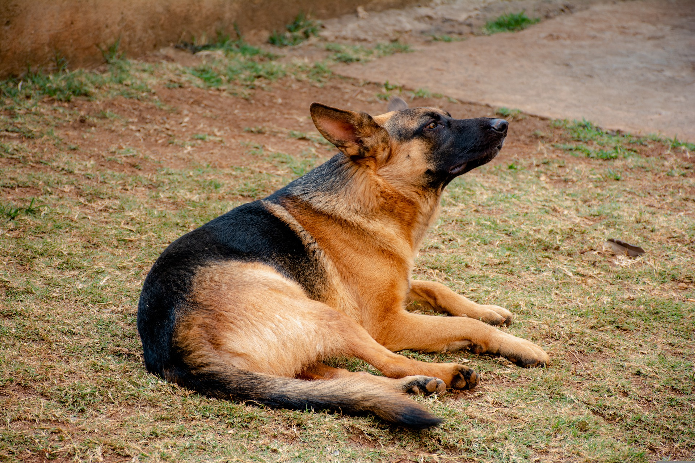
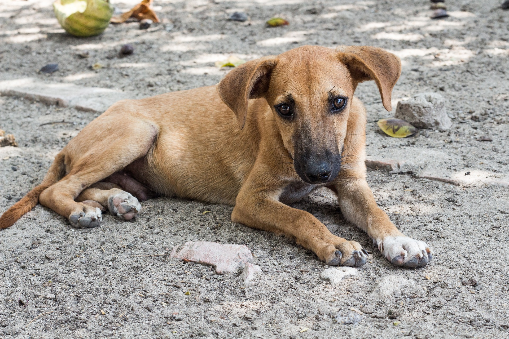

Estamos buscando un hogar
Contactanos para más info
Soy una gata de aproximadamente 4 años que busco una familia

Soy un galgo veloz que ya está cansado de correr. Quiero un hogar donde me cuiden y me lleven de paseo

Soy un minino tranquilo que sueña con tener familia

Somos 2 michis y 3 michitas que queremos crecer en un hogar feliz

Soy un perro muy tranquilo y guardián de aproximadamente 2 años y me porto super!
